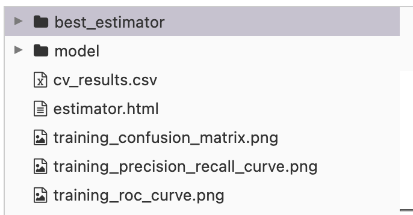
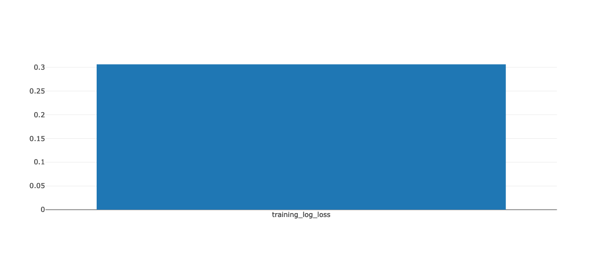

Interoperability testing for hyperparameter tuning: MLflow, LightGBM, sklearn, and dask-ml
MLflow autologging allows monitoring LightGBM training loss during model training. This behavior is not always expected when we use scikit-learn and dask to tune LightGBM models. This notebook describes how the unexpected behavior manifests and explains some gotchas when using these tools together.
ML
ML Ops
Interoperability
Author
Hongsup Shin
Published
March 17, 2023
There are numerous open source ML packages in python ecosystem. Developers do their best to maximize interoperability in relation to other main ML packages but it’s not possible to check every possible combination. That’s why I think some of the responsibility of interoperability lies on users. MLflow’s autologging method is quite handy because with a single line of code (mlflow.autologging), we obtain useful metrics of model behavior such as confusion matrix, feature importance, or training loss over epochs. However, this is not always guaranteed when we apply model tuning on top by using scikit-learn and dask.
In this notebook, I first demonstrated what MLflow autologging method did particularly for LightGBM models. Then, I tried the same autologging in model tuning frameworks of scikit-learn and Dask-ML backend, and how the autologging method behaves. Check environment.yml to run the notebook.
MLflow comes with a tracking UI, which you can launch by running mlflow ui. By default, you can see the UI http://localhost:5000. Here, I assumed that you ran mlflow ui before the following cell where experiment location was defined.
mlflow.autolog() should be called before running training but this enables all supported libraries that are imported. Thus, specific autologging is recommened:
mlflow.lightgbm.autolog()
Data and model
For this walkthrough, I used the breast cancer dataset from scikit-learn (sklearn.datasets.load_breast_cancer()), which is a binary classificaiton problem. For training, I split the dataset into train (50%), validation (25%) and test sets (25%). The validation set was used for model tuning.
Instead of lightgbm.LGBMClassifier, the scikit-learn API, we use the native LightGBM (lightgbm.train).
LightGBM autologging for a single training run (no tuning)
To test the limits of autologging and make things more interesting, I set up the following: - Apply an early-stopping callback - Track two types of metrics: log-loss ("binary_logloss") and AUROC ("auc") - Track two types of datasets: training and validation - Log test metrics in addition to the autologged metrics using mlflow.log_metrics
with mlflow.start_run(run_name="lgb_single") as run: model = lgb.train( params=params, train_set=train_set, callbacks=[lgb.early_stopping(stopping_rounds=5), lgb.log_evaluation()], valid_sets=[train_set, valid_set], valid_names=["train", "val"], ) y_pred_proba = model.predict(X_test) loss = log_loss(y_test, y_pred_proba) roc_auc = roc_auc_score(y_test, y_pred_proba) mlflow.log_metrics( {"test-logloss":loss,"test-auc": roc_auc, } )
/opt/anaconda3/envs/mlflow_tune/lib/python3.9/site-packages/lightgbm/engine.py:177: UserWarning: Found `num_iterations` in params. Will use it instead of argument
_log_warning(f"Found `{alias}` in params. Will use it instead of argument")
2023/03/19 23:00:57 WARNING mlflow.utils.autologging_utils: MLflow autologging encountered a warning: "/opt/anaconda3/envs/mlflow_tune/lib/python3.9/site-packages/_distutils_hack/__init__.py:33: UserWarning: Setuptools is replacing distutils."
When training was done, the UI showed the autologged metrics such as feature importance scores and plots:
The UI also shoed other metrics I defined when setting up the training. This information is under “Metrics” section in the run. When I selected train-binary_logloss, it showed a log-loss vs. iteration curve. I could overlay val-binary_logloss on top of it, which would be useful to identify model overfitting.
I could fetch all logged metrics via mlflow.client.MlflowClient.
This confirms that with mlflow.lightgbm.autolog, the following metrics were logged in the UI: - Optimization loss over iterations - Metrics from train and validation datasets - Feature importance scores and plots - Additional metrics logged by mlflow.log_metrics
Hyperparameter tuning and MLflow autologging
After some testing, I learned that the autologging behavior changed depending on tuner and autologging types. I tested scikit-learn and LightGBM autologging, and scikit-learn and Dask-ML tuners. This resulted in the following four combinations to test:
Test #
LightGBM autologging
scikit-learn autologging
Tuner backend
1
No
Yes
scikit-learn
2
No
Yes
dask-ml
3
Yes
Yes
scikit-learn
4
Yes
Yes
dask-ml
Test 1. sklearn autolog and sklearn tuner
To reduce the interaction btw mlflow.lightgbm.autolog and mlflow.sklearn.autolog, I turned the former first.
mlflow.lightgbm.autolog(disable=True)
mlflow.sklearn.autolog(max_tuning_runs=None) # log all runs
Here, I also used PredefinedSplit instead of k-fold to match the datasets for a hyperparameter search and evaluation parameters in LightGBM.
Additionally, to be consistent with the autologging and tuner types, I used the scikit-learn API version of LightGBM (LGBMClassifier). For this tuning example, I chose learning_rate and subsample hyperparameters.
The UI showed that 1 parent run and n_search (3) child runs were created, where the parent run had the autologged metrics such as confusion matrix, ROC curve, and PR curve:
cv_results was also returned and the logged metrics from all child runs were similar to cv_results.
mlflow.sklearn.autolog still created confusion matrix, ROC curve, and PR curve but only a single run is returned, and all child runs are now missing. Besides, the UI also didn’t log cv_results.
Is the only logged run the best run?
Here was where the behavior of mlflow.sklearn.autolog changed. It was supposed to return a single parent run and multiple child runs but when dask-ml was used as tuner, it only logged a single run. I didn’t know whether thi was the best run or not, so I decided to compare the MLflow logged result with the actual search result.
Luckily, the assertions have passed, meaning that the single recorded run by MLflow was the best run. Except that users can’t see the child runs in the UI, this behavior seems acceptable.
Test 3. lightgbm+sklearn autolog and sklearn tuner
This test idea came to my mind becasue I imagined it would be very convenient if one could use autologging on top of a sklearn tuner. Thus, I decided to turn on lightgbm autologging in addition to the sklearn autologging.
mlflow.lightgbm.autolog()
with mlflow.start_run(run_name='test_3') as run: search_cv = RandomizedSearchCV(pipe, param_space, cv=ps, n_iter=n_search) search_cv.fit( X_train_val, y_train_val, clf__eval_set=[(X_val, y_val)], clf__eval_names=["val"], clf__eval_metric=["binary_logloss"], )
This time, I found that sklearn autologging behaved normally but lightgbm autologging didn’t work at all. First, lightgbm autologging metrics such as feature importance scores were missing:

Second, training-log_loss wasn’t logged for every iteration but it was logged as a single numeric value, and thus was visualized as a bar graph:

Test 4. lightgbm+sklearn autolog and dask-ml tuner
Finally, I used the dask-ml tuner, lightgbm and sklearn autologging altogether.
with mlflow.start_run(run_name='test_4') as run: search_cv = dask_RandomizedSearchCV(pipe, param_space, cv=ps, n_iter=n_search) search_cv.fit( X_train_val, y_train_val, clf__eval_set=[(X_val, y_val)], clf__eval_names=["val"], clf__eval_metric=["binary_logloss"], )
2023/03/19 23:02:26 WARNING mlflow.utils.autologging_utils: Encountered unexpected error during sklearn autologging: The following failures occurred while performing one or more logging operations: [MlflowException('Failed to perform one or more operations on the run with ID 4f0ea51beb0748139aa4364c5d332279. Failed operations: [MlflowException("API request to http://127.0.0.1:5000/api/2.0/mlflow/runs/log-batch failed with exception HTTPConnectionPool(host=\'127.0.0.1\', port=5000): Max retries exceeded with url: /api/2.0/mlflow/runs/log-batch (Caused by ResponseError(\'too many 500 error responses\'))")]')]
This time, similar to Test 2, a single run was returned but it seemed that lightgbm autologging actually worked because the UI generated images from both sklearn and lightgbm autologging methods:
However, only single run was returned, again like in Test 2. Unfortunately, this time, this single run didn’t pass the assertion test.
This means that when dask-ml, sklearn autolog, and lightgbm autologgin are used at once, we cannot trust the MLflow tracking UI becasue the single set of represented hyperparameters in the UI are not the best estimator’s hyperparameters. This means this combination gives unreliable results, which we should avoid at all costs.
client.close()
Conclusions
In this notebook, I demonstrated how different combinations of autologging and tuners could produce different results. Some of these changed behaviors were simple omissions but I found a more troubling combination as well where the results were just simply wrong. This suggests that when it comes to testing interoperability, we should not only check whether they work together but also whether the returned results are accurate.